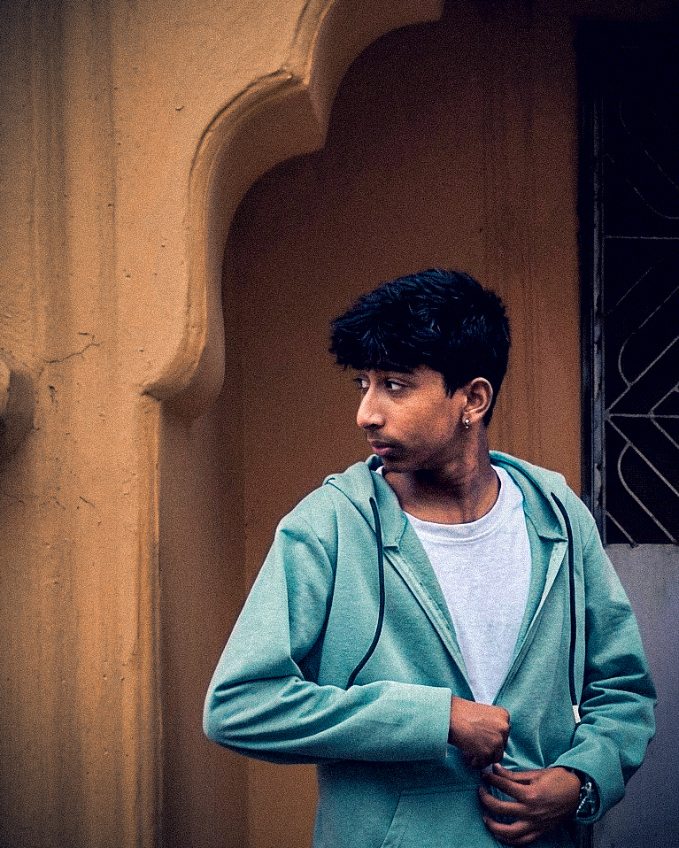
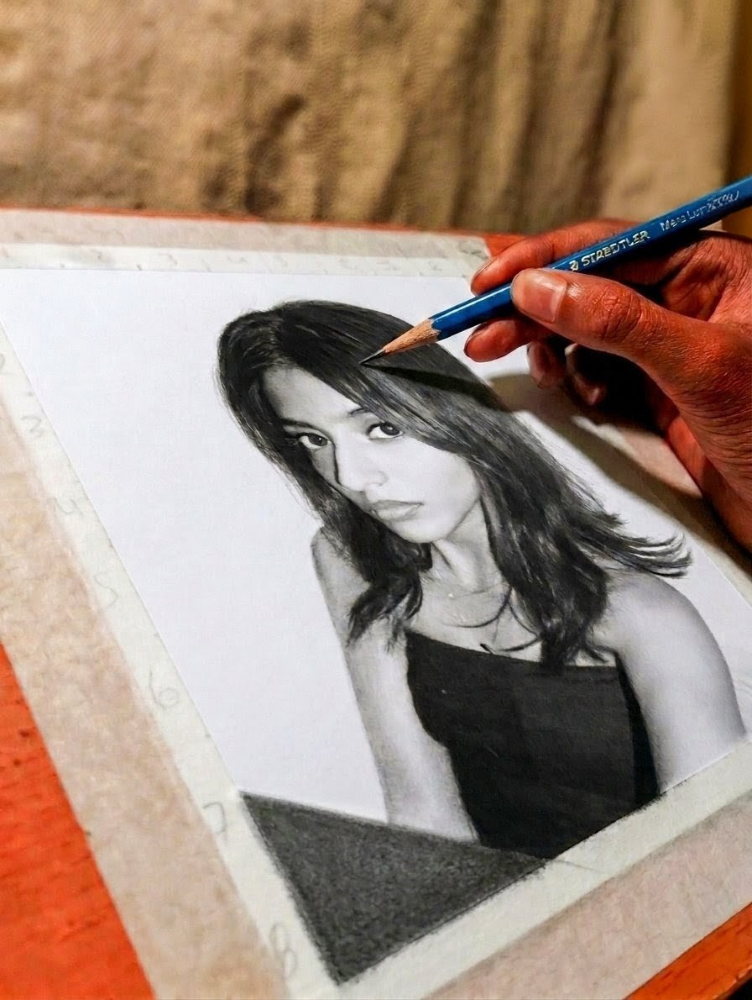
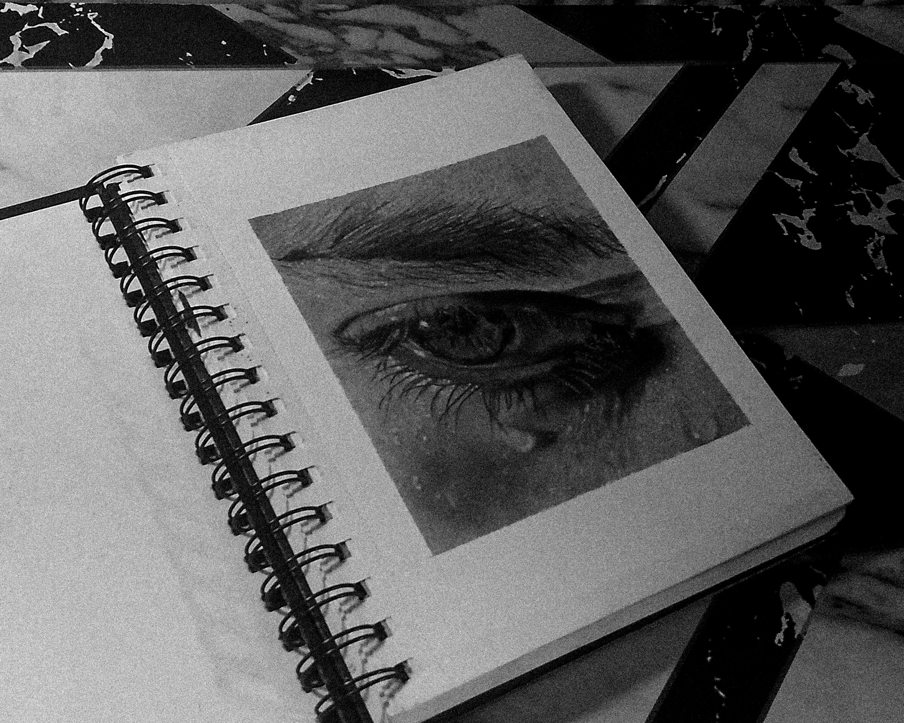
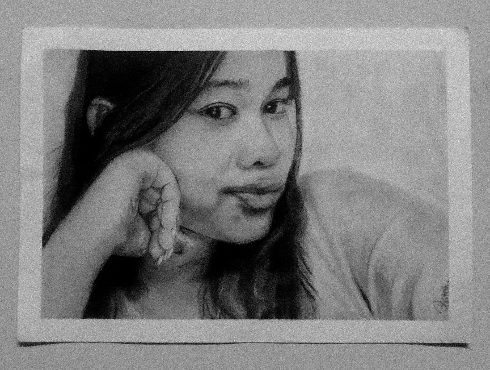

Odisha's No. 1 Hyper-Realistic Pencil Portrait Artist
I don't just draw normal sketches; I create 100% handmade hyper-realistic pencil portraits that look exactly like high-resolution photographs. From single strands of hair to real skin texture, every artwork is made with extreme patience, focus, and the best pencil shading techniques. Recognized as the top portrait artist in Jeypore and across Odisha.

A behind-the-scenes look at how I build hyper-realistic hair and skin textures layer by layer using professional graphite pencils. Pure hand-drawn perfection.

Look closely at the water drop and eyelashes. This is the highest level of pencil shading, capturing real light, moisture, and deep emotion in a single eye sketch.

A complete hyper-realistic pencil sketch. No digital filters, no shortcuts. Just pure shading, intense contrast, and a drawing that brings the paper to life.
Higher Academic Studies (+3 Degree)
Fine Arts Certification (+2 Fine Arts)